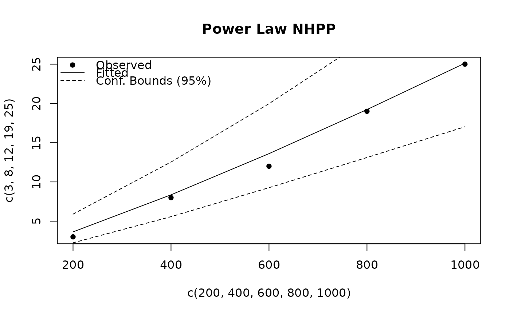

Fits a parametric NHPP model to recurrent event data from repairable systems. Supported models include the Power Law process and the Log-Linear process. The Power Law model can also be fit as a piecewise (segmented) model with automatic change point detection or user-specified breakpoints.
Usage
nhpp(
time,
event = NULL,
data = NULL,
model_type = "Power Law",
breaks = NULL,
method = c("MLE", "LS"),
conf_level = 0.95
)Arguments
- time
A numeric vector of cumulative event times, or a data frame containing columns
timeand optionallyevent. All values must be positive, finite, and strictly increasing.- event
An optional numeric vector of event counts at each time. If
NULL(default), each time is treated as a single event.- data
An optional data frame containing columns
timeand optionallyevent.- model_type
Model type:
"Power Law"(default) or"Log-Linear".- breaks
Optional vector of breakpoints for piecewise Power Law model.
- method
Estimation method:
"MLE"(default) or"LS"."LS"is not supported for"Log-Linear"models.- conf_level
Confidence level for bounds (default 0.95).
Value
An object of class nhpp containing:
- time
The input cumulative event times.
- event
The event counts.
- cum_events
Cumulative event counts.
- n_obs
Number of observations.
- model
Fitted model object (lm or segmented), or NULL for MLE.
- model_type
"Power Law"or"Log-Linear".- method
"MLE"or"LS".- params
Named list of estimated parameters.
- params_se
Named list of standard errors.
- vcov
Variance-covariance matrix (MLE only).
- fitted_values
Fitted cumulative events.
- lower_bounds
Lower confidence bounds.
- upper_bounds
Upper confidence bounds.
- residuals
Model residuals.
- logLik
Log-likelihood.
- AIC
Akaike Information Criterion.
- BIC
Bayesian Information Criterion.
- breakpoints
Breakpoints (log scale) if piecewise model.
- conf_level
Confidence level used.
Details
The Power Law NHPP models the cumulative number of events as \(N(t) = \lambda t^\beta\). The parameter \(\beta > 1\) indicates a deteriorating system (increasing event rate), \(\beta < 1\) an improving system, and \(\beta = 1\) a constant rate (HPP).
The Log-Linear NHPP models the intensity as \(\lambda(t) = \exp(a + bt)\) with cumulative function \(\Lambda(t) = \frac{e^a}{b}(e^{bt} - 1)\).
See also
Other Repairable Systems Analysis:
exposure(),
mcf(),
plot.exposure(),
plot.mcf(),
plot.nhpp(),
plot.nhpp_predict(),
predict_nhpp(),
print.exposure(),
print.mcf(),
print.nhpp(),
print.nhpp_predict()
Examples
time <- c(200, 400, 600, 800, 1000)
event <- c(3, 5, 4, 7, 6)
result <- nhpp(time, event)
print(result)
#> Non-Homogeneous Poisson Process (NHPP)
#> ---------------------------------------
#> Model Type: Power Law
#> Estimation Method: MLE
#> Number of observations: 5
#>
#> Parameters:
#> Beta: 1.2014 (SE = 0.1181)
#> Lambda: 0.0063
#>
#> Goodness of Fit:
#> Log-likelihood: 15.87
#> AIC: -27.75
#> BIC: -28.53
plot(result, main = "Power Law NHPP")

result_ll <- nhpp(time, event, model_type = "Log-Linear")
print(result_ll)
#> Non-Homogeneous Poisson Process (NHPP)
#> ---------------------------------------
#> Model Type: Log-Linear
#> Estimation Method: MLE
#> Number of observations: 5
#>
#> Parameters:
#> a: -4.1205 (SE = 0.4279)
#> b: 0.0008 (SE = 0.0006)
#>
#> Goodness of Fit:
#> Log-likelihood: 15.88
#> AIC: -27.76
#> BIC: -28.54